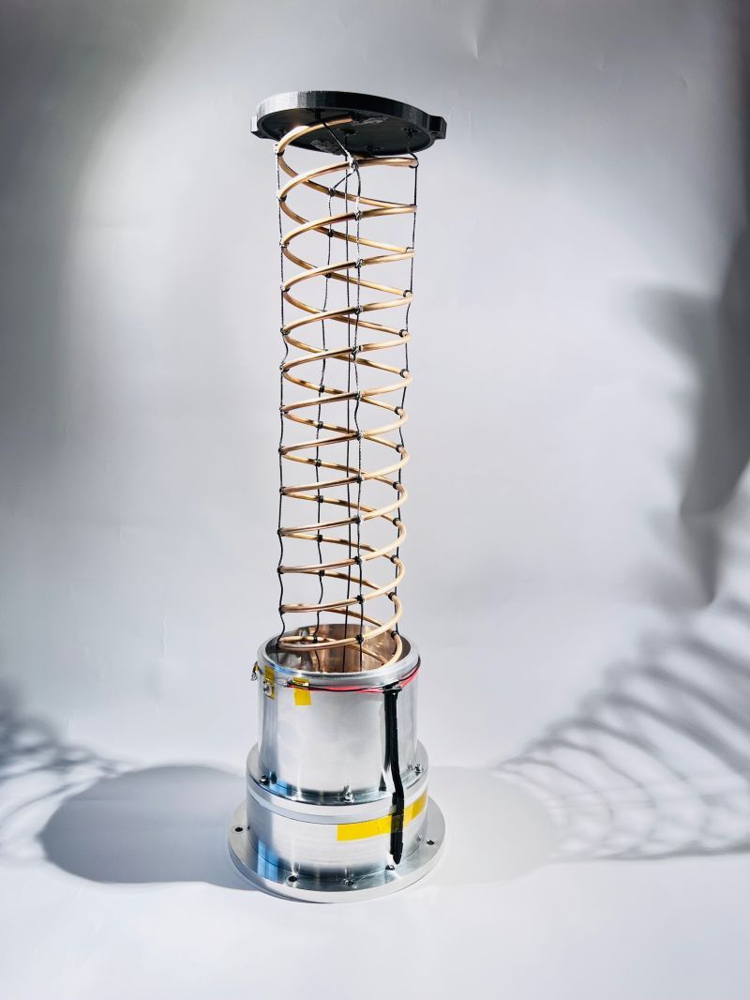

Self Deployed Helical Antenna Capstone Project
In this capstone project, I developed a self-deployed helical antenna designed for small satellites. The antenna starts in a compact, 3.5-inch compressed state and extends to nearly 20 inches once deployed. My goal was to create a robust design that not only saves space during launch but also delivers reliable performance once in orbit.
Drawing on my mechanical engineering background and newfound expertise in machine learning, I focused on optimizing the antenna’s mechanical properties so that it behaves like a controlled spring. This allows the antenna to deploy precisely when triggered by an onboard computer—a critical requirement for modern, compact satellite systems.
Project Overview & Technical Insights
As the space industry evolves towards smaller, more agile satellites, I recognized the need for antenna systems that shrink without sacrificing performance. Sponsored by Lockheed Martin Space, our team took on the challenge of designing an antenna that deploys from a compressed state. This design involved complex trade-offs between geometry, material selection, and frequency requirements.
Using high-frequency simulation tools and spring calculators, I worked to ensure that the antenna would not only deploy reliably under the harsh conditions of an Atlas V launch but also deliver the necessary radiofrequency performance. This process was highly iterative and required balancing multiple technical constraints simultaneously. Ultimately, this project represents a significant step forward in the development of compact, high-performance satellite hardware.
← Back to Projects